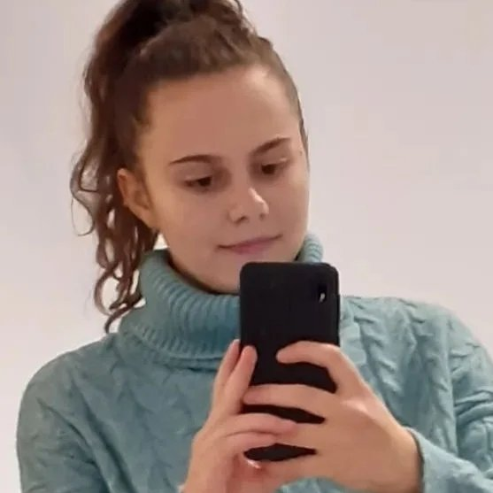

 Здраво, јас сум Драгана Трифунова имам 19 години и студирам на еден од најпрестижните факултети во Република Северна Македонија- Факултет за информатички науки и компјутерско инжинерство-Скопје. Родена сум на 23 ноември 2003 година во Кочани каде што живеев до моите 18 години. Основно образование завршив во училишето ОУ „Св. Кирил и Методиј“, а средно образование во СОУ „Љупчо Сантов“-Кочани. За време на моето школување уште од мали нозе посебно ме привлекуваше математиката, информатиката и физиката, каде преку натпревари успешно го претставив најфаворизираното и најдобро-рангираното по успех-основно училиште „Св.Кирил и Методиј“. Покрај задолжителното образование надвор од училиштето редовно се занимавав со воннаставни активности како што се странски јазици, спорт, уметности, Еразмус проекти и сл. На моите 18 години одлучив да студирам на ФИНКИ за да ја обезбедам својата сигурна и просперитетна иднина. Уште од првите денови кога зачекорив во факултетот па сé до крајот ќе се трудам максимално да дадам се од себе за да бидам успешна. Моето внимание и посветеност кон работата ме прави да бидам храбра, вредна и оптимистички настроена кон животот и секогаш да се борам за своите цели.